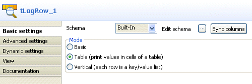

Avertissement
Ce composant est disponible dans la Palette du studio si vous avez souscrit à l'un des produits Talend Platform.
Les composants de gestion d’adresse dont il est question ici sont le résultat de la collaboration de Talend et Experian QAS, l’un des leaders mondiaux en gestion et de vérification d’adresses internationales.
Pour plus d’informations à propos de l’entreprise et de ses outils logiciels, visitez le site : http://www.qas.com.
|
Famille de composant |
Data Quality | |
|
Fonction |
Le composant tQASBatchAddressRow vérifie les adresses dans une colonne. Il fait une boucle sur chaque ligne et lit des adresses en entrée par rapport à des données dans une Bibliothèque de Liens Dynamiques (Dynamic Link Library, DLL) fournie par QAS installée localement. NoteLe tQASBatchAddressRow utilise Batch 4.70. L’avantage de ce composant par rapport au la section intitulée « tQASAddressRow » est qu’il n’appelle pas de Service Web afin de vérifier les données des adresses postales. Ce composant utilise la bibliothèque DLL installée localement pour vérifier les données des adresses postales et optimise ainsi les performances, particulièrement lorsqu’il s’agit de larges volumes de données. | |
|
Objectif |
Le tQASBatchAddressRow corrige toute erreur de format ou d’orthographe, ajoute les données manquantes et donne le statut de vérification pour chaque ligne puisque l’adresse peut ne pas avoir assez d’informations pour correspondre à un seul résultat livrable dans les données DLL. Pour plus d’informations concernant les statuts de vérification, consultez la section intitulée « Niveaux de vérifications de QuickAccess (statut de vérification) ». | |
|
Basic settings |
Schema et Edit schema |
Un schéma est une description de lignes, il définit le nombre de champs qui sont traités et passés au composant suivant. Le schéma est soit local (built-in) soit distant dans le Repository. |
|
|
|
Built-in : Le schéma est créé et conservé ponctuellement pour ce composant seulement. Voir également le Guide utilisateur de Talend Data Integration Studio. |
|
|
|
Repository : Le schéma existe déjà et est stocké dans le Repository. Ainsi, il peut être réutilisé. Voir également le Guide utilisateur de Talend Data Integration Studio. |
|
|
Country |
Sélectionnez dans la liste le pays correspondant à vos adresses d’entrée. |
|
|
Choose the address column |
Sélectionnez dans la liste la colonne d’adresse que vous souhaitez analyser. |
|
|
Specify the configuration file |
Cliquez sur le bouton [...] et parcourez votre répertoire afin de définir le chemin d’accès à la bibliothèque DLL, fournie par Experian QAS et installée localement. |
|
Advanced settings |
tStatCatcher Statistics |
Cochez cette case pour collecter les métadonnées de process du Job, aussi bien au niveau du Job qu’au niveau de chaque composant. |
|
Utilisation |
Ce composant est un composant intermédiaire, il nécessite un composant d’entrée et un composant de sortie. | |
|
Limitation |
Avant de pouvoir utiliser ce composant, vous devez installer la bibliothèque DLL fournie par Experian QAS. | |
Le scénario ci-dessous comprend un Job à trois composants, créé dans Talend Data Integration Studio.
Ce Job :
génère des informations client aléatoires,
utilise le composant tQASBatchAddressRow pour analyser les colonnes de sortie, afficher les adresses formatées correctement avec leur statut de vérification dans la console,
Procédez comme suit pour créer et exécuter le scénario :
Déposez les composants suivants de la Palette dans l’espace de modélisation graphique : tFixedFlowInput, tQASBatchAddressRow et tLogRow.

Reliez les composants à l’aide de liens Row > Main.
Double-cliquez sur le tFixedFlowInput afin d’afficher sa vue Basic settings et définir ses propriétés.

Cliquez sur le bouton [...] à côté du champ Edit Schema et ajoutez une colonne addr. Cliquez sur OK pour fermer la boîte de dialogue s’ouvre.

Dans la zone Mode, sélectionnez l’option Use Inline Table, ajoutez trois lignes en cliquant trois fois sur le bouton [+] et définissez les données de la colonne d'entrée, trois lignes d'adresses dans cet exemple.

Double-cliquez sur le composant tQASBatchAddressRow pour afficher ses Basic settings pour définir ses propriétés.

Cliquez sur le bouton [...] à côté du champ Edit schema, si besoin, pour visualiser les flux de données d’entrée et de sortie. Le schéma de sortie doit inclure la colonne addr.

Note
Le schéma de sortie des composants QuickAddress dépend du pays sélectionné dans la liste Country puisque chaque pays possède des normes différentes concernant les adresses.
Cliquez sur OK pour fermer la boîte de dialogue.
Dans la liste Country, sélectionnez le pays correspondant à vos adresses d’entrée.
Dans la liste Choose the address column, sélectionnez la colonne d’adresses que vous souhaitez analyser, addr dans cet exemple.
Cliquez sur le bouton [...] à côté du champ Specify the configuration file et parcourez votre répertoire jusqu’au fichier DLL installé localement.
Le chemin d’accès au fichier DLL est défini dans le champ.
Double-cliquez sur le composant tLogRow afin d’afficher sa vue Basic settings. Sélectionnez l'option Table dans la zone Mode afin d'afficher les résultats d'exécution sous forme de tableau.

Sauvegardez votre Job et appuyez sur F6 pour l’exécuter et afficher le résultat dans la console.

Dans les exemples de résultats ci-dessus, le tQASBatchAddressRow lit les lignes d’entrée, corrige et formate les adresses, donne les résultats dans les colonnes ADDRESS et ZIP_CODE_CITY, puis fournit le statut de vérification dans la ligne STATUS. Pour plus d’informations concernant la colonne de statut, vérifiez la documentation correspondante sur http://www.qas.com.